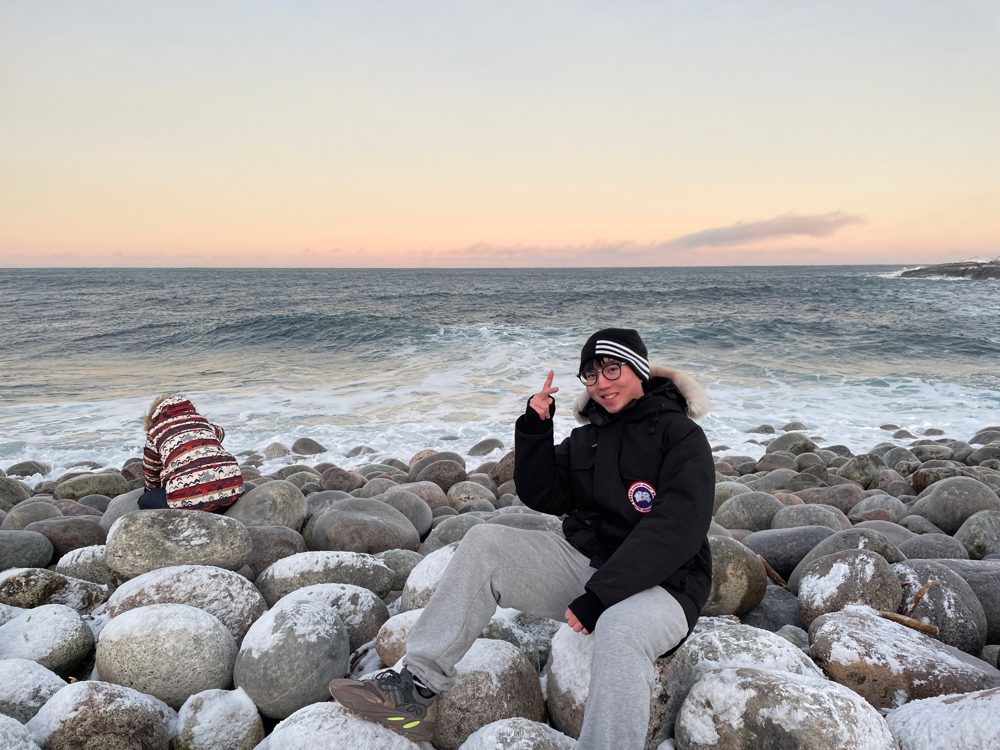

Skill Internalization through Proposal, Routing, and Reuse
A framework where an actor proposes a reusable skill at episode close, a critic routes the proposal into a managed skillbank, and future reuse becomes a long-term test of value.
Research on LLM Agents, Tool Learning, and Reinforcement Learning
I am interested in how language agents learn reusable behaviors from interaction. My recent work focuses on skill internalization, agent post-training, tool use, memory, and long-horizon decision making.
I am currently working at Qiantang Credit. This page follows a simpler academic-homepage style inspired by your reference template: short introduction on top, then updates, internships, and publications.
Email: lyfei1126@gmail.com /

Skill Internalization through Proposal, Routing, and Reuse
A framework where an actor proposes a reusable skill at episode close, a critic routes the proposal into a managed skillbank, and future reuse becomes a long-term test of value.
CogDual: Enhancing Dual Cognition of LLMs via Reinforcement Learning with Implicit Rule-Based Rewards
[arXiv] / [GitHub Code]
CodeTool: Enhancing Programmatic Tool Invocation of LLMs via Process Supervision
[arXiv] / [GitHub Code]